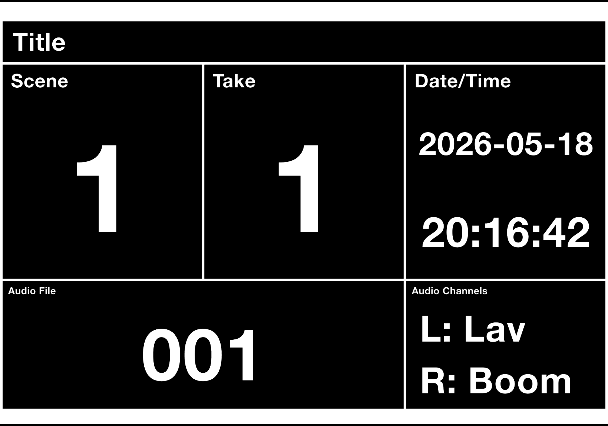

A dead-simple digital slate for film & video.

Scene, take, audio file, and audio-channel labels on a single landscape screen. Swipe a horizontal stroke anywhere and it flashes red → green while playing a two-beep cadence — a frame-accurate reference so an editor can line audio up to picture in post.